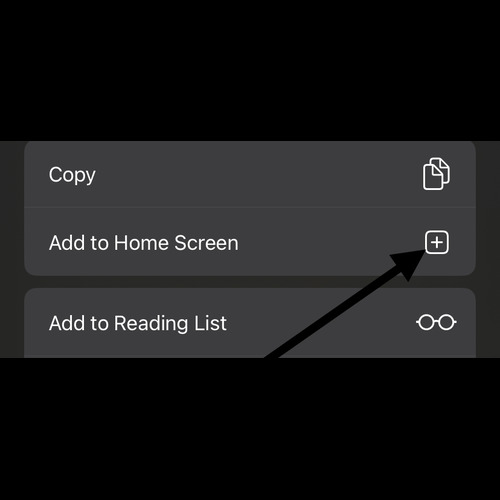
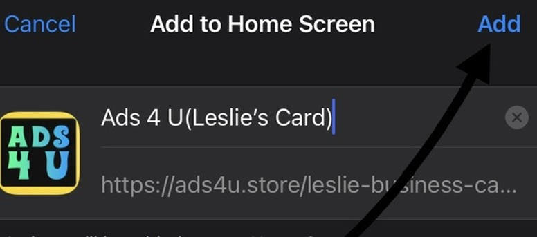

Leslie Realtor
üì± Add this card to your home screen for instant access.
How to Add This Card to Your Home Screen
Step 1: Tap the Share icon in your browser (usually at the bottom or top).

Step 2: Scroll and find "Add to Home Screen".

Step 3: Tap Add to finish.